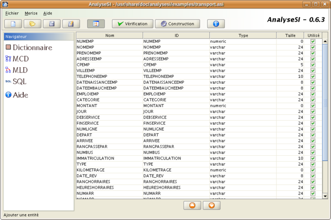

Dictionnaire de données
En méthode Merise, un dictionnaire de données est un document structuré qui recense et décrit de manière détaillée l'ensemble des données utilisées dans un système d'information. Il spécifie les entités, leurs attributs, les domaines de valeurs, les clés, ainsi que les relations entre les entités. Ce document joue un rôle crucial dans la conception et la gestion des données, offrant une référence centralisée pour assurer la cohérence et la compréhension des éléments du système. Le dictionnaire de données facilite la communication entre les différents acteurs impliqués dans le développement et la maintenance du système informatique.
règles de gestion
En méthode Merise, les règles de gestion sont des spécifications formelles qui décrivent les contraintes, les conditions et les comportements à respecter dans le traitement des données au sein d'un système d'information. Ces règles définissent comment les données doivent être traitées, manipulées, validées et stockées pour garantir la cohérence et l'intégrité de l'ensemble du système. Elles peuvent inclure des exigences liées à la saisie des données, aux calculs, aux contrôles de qualité, aux autorisations d'accès, aux workflows, et à d'autres aspects cruciaux de la gestion de l'information au sein de l'organisation. Les règles de gestion sont essentielles pour assurer la fiabilité et la conformité des données dans un contexte informatique.
MCD
Le Modèle Conceptuel de Données (MCD) est une représentation graphique des concepts et des relations entre les données dans un système d'information. Il utilise des entités pour représenter des objets du monde réel, des attributs pour décrire les caractéristiques de ces objets, et des relations pour indiquer les liens entre les entités. Le MCD offre une vue abstraite et conceptuelle des données sans se préoccuper des détails de la mise en œuvre physique. Il constitue une étape clé dans la méthodologie de conception des bases de données, aidant à définir la structure logique du système avant la création d'une base de données relationnelle.

MLD
Le Modèle Logique de Données (MLD) représente de manière formelle et structurée la façon dont les données seront organisées dans une base de données relationnelle. Contrairement au Modèle Conceptuel de Données (MCD) qui est plus abstrait, le MLD se concentre sur les tables, les clés primaires, les clés étrangères, les attributs et les relations entre les tables. Il traduit les concepts du MCD en une représentation concrète compatible avec le modèle relationnel. En résumé, le MLD précise la structure logique détaillée de la base de données en vue de son implémentation concrète.

MPD
Le Modèle Physique de Données (MPD) est la représentation spécifique des données dans une base de données à un niveau physique, détaillant les aspects concrets de leur stockage, comme les types de données, les index, les contraintes d'intégrité, et d'autres paramètres de gestion de la base de données. Contrairement au Modèle Logique de Données (MLD), qui se concentre sur la structure relationnelle, le MPD traduit ces concepts logiques en schémas de tables, en définissant précisément les caractéristiques physiques des données. En résumé, le MPD constitue la phase finale de la conception des bases de données, préparant les détails nécessaires à la mise en œuvre effective dans un système de gestion de base de données.